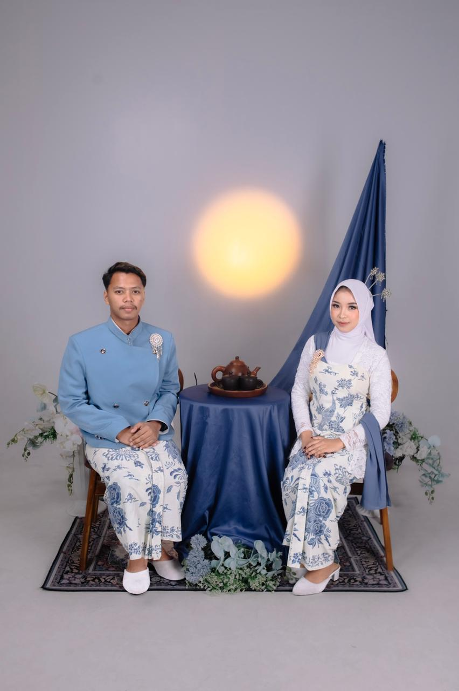

Desi & Karel
22 JULI 2026

The Journey
Lembaran Cerita Indah
Pertemuan Pertama
Berawal dari sebuah skenario manis, mata saling menyapa, membawa getaran tenang yang tidak pernah diduga sebelumnya.
Satu Visi & Komitmen
Menyatukan dua pemikiran berbeda menjadi satu tujuan yang kokoh, saling melengkapi di setiap situasi.
Janji Suci Pernikahan
22 Juli 2026 menjadi garis awal baru untuk melangkah bersama selamanya dalam ikatan yang sah.
Memories
Momen Penuh Kebahagiaan

Senyuman

Kebersamaan

Menuju Selamanya
Kotak Kebahagiaan ✨
"Ketuk tombol di bawah untuk memunculkan untaian doa kebahagiaan untuk pengantin."
Doa Tulus
"Selamat menempuh lembaran hidup yang baru, Desi & Karel."
Semoga pernikahan ini menjadi awal dari perjalanan panjang yang dipenuhi kedamaian, rasa saling menghargai, serta cinta yang selalu mekar layaknya ketenangan laut yang dalam.
Selamat menata masa depan bersama, saling menguatkan di kala badai, dan berbahagia di kala cerah. Doa terbaik menyertai setiap langkah perjalanan baru kalian berdua.